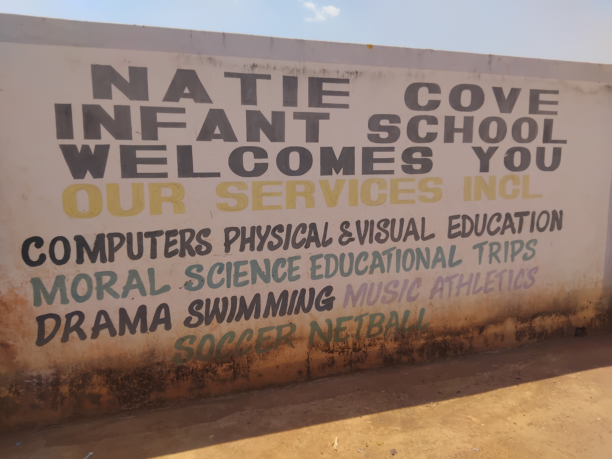

Natie Cove Infant and Pri School serves learners from Grade 1 through Grade 7, with a focus on hands-on learning, strong fundamentals, and a caring community.
Natie Cove was established in 2018 and enrolled 20 infant learners.The School transformed itself and now has 100 learners.

Grades 1–3. Building reading, number sense, and curiosity.
Grades 4–6. Broadening subjects, introducing project work.
Weekly lessons in algorithms, loops, and problem solving.